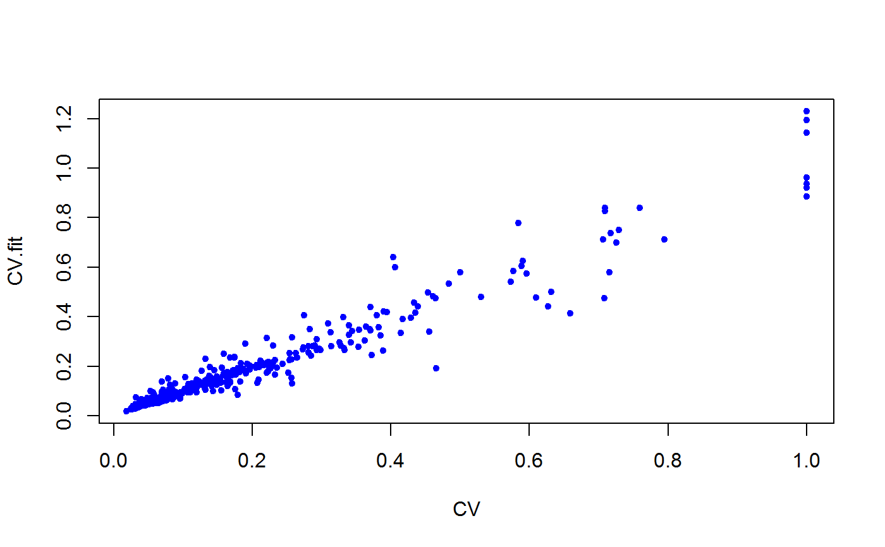
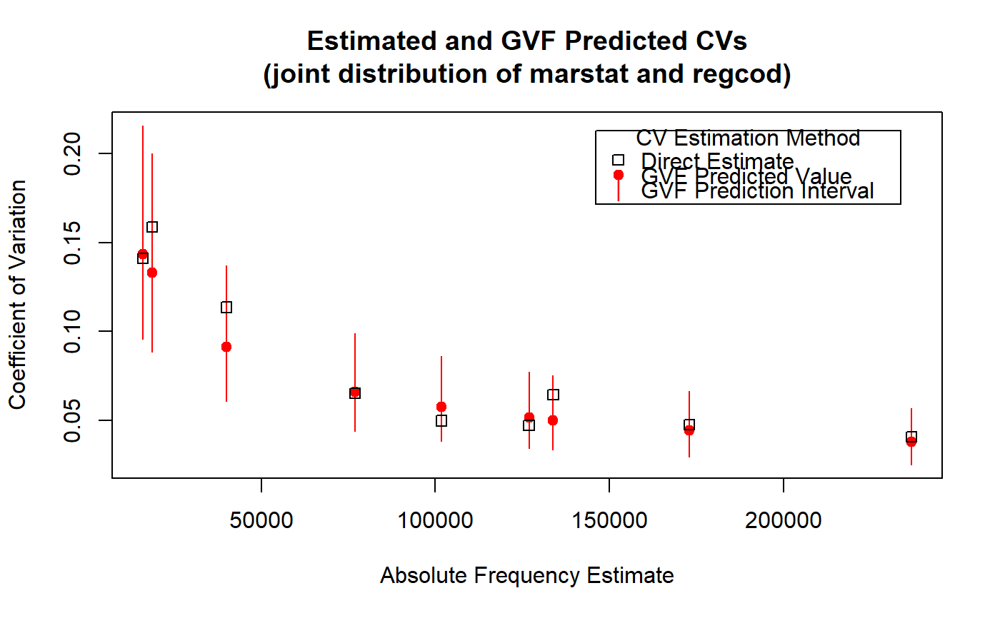

predictCV.RdThis function predicts the CV values associated to given estimates, based on fitted GVF model(s).
predictCV(object, new.Y = NULL, scale = NULL, df = Inf, interval = c("none", "confidence", "prediction"), level = 0.95, na.action = na.pass, pred.var = NULL, weights = 1)
| object | An object containing one or more fitted GVF models. |
|---|---|
| new.Y | A data frame storing new estimates whose CVs have to be predicted. If omitted or |
| scale | Scale parameter for standard error calculation.
See also |
| df | Degrees of freedom for scale.
See also |
| interval | Type of interval calculation. Can be abbreviated.
See also |
| level | Confidence (or tolerance) level for intervals.
See also |
| na.action | Function determining what should be done with missing values in |
| pred.var | The variance(s) for future observations to be assumed for prediction intervals.
See also |
| weights | Variance weights for prediction. This can be a numeric vector or a one-sided model formula. In the latter case, it is interpreted as an expression evaluated in |
The main motivation for building and fitting a GVF model is to exploit the fitted model to predict the sampling error associated to a given estimate, instead of having to compute directly an estimate of such sampling error. Function predictCV is relevant to that scope.
Despite different GVF models can specify as response term (call it 'resp') different functions of variables 'SE', 'CV', and 'VAR' (see e.g. [Wolter 07]), function predictCV adopts variable 'CV' as a universal pivot. This means that predictCV can handle only fitted GVF models which are registered (that is already stored inside GVF.db), and for which variable Resp.to.CV is not NA. Indeed, it is variable Resp.to.CV of data frame GVF.db which tells predictCV how to transform the response of an arbitrary GVF model ('resp') into the pivot measure of variability ('CV').
By default new.Y = NULL and CVs (and intervals, if any) obtained by transforming fitted response values will be returned. If passed, argument new.Y must be a data frame storing new estimates for which CVs have to be predicted. Such input estimates have to be stored in column Y of data frame new.Y. Moreover, if object stores GVF model(s) fitted to grouped data (namely, it has class gvf.fit.gr or gvf.fits.gr), then new.Y should also have columns identifying the groups to which input estimates are referred (see ‘Examples’). The only exception is the following: if the new.Y data frame has just the Y column, then CVs will be predicted for all groups (see ‘Examples’). The function will check for consistency between groups available in object and in new.Y (see ‘Examples’).
If interval = "none" (the default), the function will return predicted CVs only. Otherwise, lower and upper bounds of confidence (or prediction) intervals around predicted CVs will be also provided. Use argument level to specify the desired confidence (or tolerance) level for those intervals.
All the other arguments have the same meaning as in function predict.lm.
If object is a single GVF model (classes gvf.fit and gvf.fit.gr), a data frame.
If object is a set of GVF models fitted to the same data (classes gvf.fits and gvf.fits.gr), a list of data frames, one for each input GVF model.
The output data frame(s) will store input estimates new.Y plus additional columns:
CV.fitPredicted CV value, numeric.
CV.lwrLower bound of requested interval (if any), numeric.
CV.uprUpper bound of requested interval (if any), numeric.
Of course, lower and upper bounds for CVs will be reported only when interval != "none".
Wolter, K.M. (2007) “Introduction to Variance Estimation”, Second Edition, Springer-Verlag, New York.
Please read the ‘Note’ section of predict.lm.
GVF.db to manage ReGenesees archive of registered GVF models, gvf.input and svystat to prepare the input for GVF model fitting, fit.gvf to fit GVF models, plot.gvf.fit to get diagnostic plots for fitted GVF models, and drop.gvf.points to drop alleged outliers from a fitted GVF model and simultaneously refit it.
############################################ # Simple examples to illustrate the syntax # ############################################ # Load example data: data(AF.gvf) # Inspect available estimates and errors of counts: head(ee.AF)#> name Y SE CV VAR #> 1 ind 924101.3 17172.681 0.01858312 294900983 #> 2 sexf 470060.8 12796.386 0.02722283 163747492 #> 3 sexm 454040.5 11359.582 0.02501887 129040102 #> 4 marstatmarried 536680.2 13970.474 0.02603128 195174152 #> 5 marstatunmarried 312654.5 11180.844 0.03576102 125011282 #> 6 marstatwidowed 74766.6 5880.564 0.07865228 34581029summary(ee.AF)#> name Y SE CV #> age10c1 : 1 Min. : 0 Min. : 0 Min. :0.01858 #> age10c10: 1 1st Qu.: 4292 1st Qu.: 1212 1st Qu.:0.08230 #> age10c2 : 1 Median : 16633 Median : 2268 Median :0.14861 #> age10c3 : 1 Mean : 45014 Mean : 2989 Mean :0.22191 #> age10c4 : 1 3rd Qu.: 46046 3rd Qu.: 4006 3rd Qu.:0.27813 #> age10c5 : 1 Max. :924101 Max. :17173 Max. :1.00000 #> (Other) :343 NA's :6 #> VAR #> Min. : 0 #> 1st Qu.: 1470114 #> Median : 5146089 #> Mean : 15409738 #> 3rd Qu.: 16045307 #> Max. :294900983 #># List available registered GVF models: GVF.db#> #> # Registered GVF models currently available: #> #> Model.id GVF.model Estimator.kind Resp.to.CV #> 1 1 log(CV^2) ~ log(Y) Frequency sqrt(exp(resp)) #> 2 2 CV^2 ~ I(1/Y) Frequency sqrt(resp) #> 3 3 CV^2 ~ I(1/Y) + I(1/Y^2) Frequency sqrt(resp) #> 4 4 SE ~ Y + I(Y^2) Total resp/Y #> 5 5 CV ~ I(1/Y) + Y Total resp #>## (A) A *single* fitted GVF model ## # Fit example data to registered GVF model number one: m <- fit.gvf(ee.AF, 1) # Not passing 'new.Y' yield CVs from fitted response values: p <- predictCV(m) # Take a look: head(p)#> name Y SE CV VAR CV.fit #> 1 ind 924101.3 17172.681 0.01858312 294900983 0.01911425 #> 2 sexf 470060.8 12796.386 0.02722283 163747492 0.02675415 #> 3 sexm 454040.5 11359.582 0.02501887 129040102 0.02721964 #> 4 marstatmarried 536680.2 13970.474 0.02603128 195174152 0.02504709 #> 5 marstatunmarried 312654.5 11180.844 0.03576102 125011282 0.03277057 #> 6 marstatwidowed 74766.6 5880.564 0.07865228 34581029 0.06676940# Now let's predict CV values for new estimates of counts # e.g. Y = c(1000, 5000, 10000, 50000, 100000) # First, put these values into a data frame: new.Y <- data.frame(Y = c(1000, 5000, 10000, 50000, 100000)) new.Y#> Y #> 1 1e+03 #> 2 5e+03 #> 3 1e+04 #> 4 5e+04 #> 5 1e+05# Then, compute predicted values and confidence intervals: p <- predictCV(m, new.Y, interval = "confidence") p#> Y CV.fit CV.lwr CV.upr #> 1 1e+03 0.57101997 0.54810412 0.59489391 #> 2 5e+03 0.25641854 0.24988014 0.26312802 #> 3 1e+04 0.18163618 0.17760821 0.18575551 #> 4 5e+04 0.08156437 0.07936012 0.08382984 #> 5 1e+05 0.05777679 0.05586842 0.05975036# NOTE: Should we ever need it, we could also use function predict # to predict *response* values instead of CVs: predict(m, new.Y, interval = "confidence")#> fit lwr upr #> 1 -1.120662 -1.202580 -1.038744 #> 2 -2.721889 -2.773548 -2.670229 #> 3 -3.411499 -3.456350 -3.366648 #> 4 -5.012725 -5.067519 -4.957932 #> 5 -5.702336 -5.769512 -5.635160## (B) A *a set* of GVF models fitted to the same data ## # Fit example data to registered GVF models for frequencies (i.e. number 1:3): mm <- fit.gvf(ee.AF, 1:3) # Let's predict CV values for the same new estimates of counts used above, # i.e. Y = c(1000, 5000, 10000, 50000, 100000). # Separate predictions will be obtained from the three fitted GVF models pp <- predictCV(mm, new.Y, interval = "confidence")#> Warning: NaNs producedpp#> [[1]] #> Y CV.fit CV.lwr CV.upr #> 1 1e+03 0.57101997 0.54810412 0.59489391 #> 2 5e+03 0.25641854 0.24988014 0.26312802 #> 3 1e+04 0.18163618 0.17760821 0.18575551 #> 4 5e+04 0.08156437 0.07936012 0.08382984 #> 5 1e+05 0.05777679 0.05586842 0.05975036 #> #> [[2]] #> Y CV.fit CV.lwr CV.upr #> 1 1e+03 0.5363658 0.5279505 0.5446511 #> 2 5e+03 0.2609004 0.2486027 0.2726440 #> 3 1e+04 0.2015357 0.1848129 0.2169733 #> 4 5e+04 0.1365822 0.1093189 0.1592444 #> 5 1e+05 0.1261327 0.0957598 0.1504957 #> #> [[3]] #> Y CV.fit CV.lwr CV.upr #> 1 1e+03 0.58835899 0.57641808 0.60006233 #> 2 5e+03 0.27175065 0.26119266 0.28191351 #> 3 1e+04 0.19230411 0.17678564 0.20666054 #> 4 5e+04 0.08387124 0.02669538 0.11556871 #> 5 1e+05 0.05712089 NaN 0.09843024 #># NOTE: The WARNING above arises from the third fitted GVF model and explains # the appearance of NaN at the lower bound of the CV confidence interval # for input Y = 100000. Indeed, the response of the third model is the # squared CV (which ought to be *positive*), but the prediction for the # lower endpoint of the confidence interval happens to be *negative*: predict(mm, new.Y, interval = "confidence")#> [[1]] #> fit lwr upr #> 1 -1.120662 -1.202580 -1.038744 #> 2 -2.721889 -2.773548 -2.670229 #> 3 -3.411499 -3.456350 -3.366648 #> 4 -5.012725 -5.067519 -4.957932 #> 5 -5.702336 -5.769512 -5.635160 #> #> [[2]] #> fit lwr upr #> 1 0.28768831 0.278731774 0.29664484 #> 2 0.06806903 0.061803292 0.07433477 #> 3 0.04061662 0.034155805 0.04707743 #> 4 0.01865469 0.011950613 0.02535877 #> 5 0.01590945 0.009169939 0.02264896 #> #> [[3]] #> fit lwr upr #> 1 0.346166300 0.3322577988 0.360074802 #> 2 0.073848417 0.0682216055 0.079475228 #> 3 0.036980871 0.0312531623 0.042708580 #> 4 0.007034385 0.0007126432 0.013356126 #> 5 0.003262796 -0.0031629208 0.009688512 #>## (C) a *single* GVF model fitted to *grouped* data ## # We have at our disposal the following survey design object on household data: exdes#> Stratified 2 - Stage Cluster Sampling Design (with replacement) #> - [55] strata #> - [1307, 2372] clusters #> #> Call: #> e.svydesign(data = example, ids = ~towcod + famcod, strata = ~SUPERSTRATUM, #> weights = ~weight, fpc = NULL, self.rep.str = NULL, check.data = TRUE)# Use function svystat to prepare *grouped* estimates and errors of counts # to be fitted separately (here groups are regions): ee.g <- svystat(exdes, y=~ind, by=~age5c:marstat:sex, combo=3, group=~regcod) # Inspect these grouped estimates and errors of counts: lapply(ee.g, head)#> $`6` #> name Y SE CV VAR #> 1 6:ind 293458.3 8923.806 0.03040911 79634317 #> 2 6.1:ind 40903.4 4080.234 0.09975293 16648310 #> 3 6.2:ind 93387.9 6248.690 0.06691113 39046122 #> 4 6.3:ind 118888.1 5682.201 0.04779453 32287405 #> 5 6.4:ind 34964.4 4605.358 0.13171563 21209323 #> 6 6.5:ind 5314.5 1131.029 0.21281943 1279226 #> #> $`7` #> name Y SE CV VAR #> 1 7:ind 410671.9 12714.366 0.03095991 161655092 #> 2 7.1:ind 55833.8 4814.445 0.08622815 23178885 #> 3 7.2:ind 131681.4 6148.902 0.04669529 37808992 #> 4 7.3:ind 148350.1 6489.953 0.04374754 42119485 #> 5 7.4:ind 63302.5 5796.072 0.09156150 33594447 #> 6 7.5:ind 11504.1 2216.158 0.19264069 4911355 #> #> $`10` #> name Y SE CV VAR #> 1 10:ind 219971.1 7321.992 0.03328616 53611574 #> 2 10.1:ind 32191.2 2677.704 0.08318125 7170100 #> 3 10.2:ind 69505.8 4025.611 0.05791763 16205547 #> 4 10.3:ind 89225.7 3619.757 0.04056855 13102640 #> 5 10.4:ind 24630.7 3092.299 0.12554653 9562313 #> 6 10.5:ind 4417.7 1119.309 0.25336928 1252854 #>#> $`6` #> name Y SE CV #> Length:69 Min. : 536.9 Min. : 313.7 Min. :0.03041 #> Class :character 1st Qu.: 3731.4 1st Qu.: 945.5 1st Qu.:0.09752 #> Mode :character Median : 15802.5 Median :2373.1 Median :0.15608 #> Mean : 34024.2 Mean :2803.8 Mean :0.22400 #> 3rd Qu.: 40903.4 3rd Qu.:4046.9 3rd Qu.:0.30588 #> Max. :293458.3 Max. :8923.8 Max. :0.72946 #> VAR #> Min. : 98432 #> 1st Qu.: 894042 #> Median : 5631452 #> Mean :11962959 #> 3rd Qu.:16377465 #> Max. :79634317 #> #> $`7` #> name Y SE CV #> Length:71 Min. : 350.7 Min. : 350.7 Min. :0.03096 #> Class :character 1st Qu.: 6293.6 1st Qu.: 1592.4 1st Qu.:0.08590 #> Mode :character Median : 21186.6 Median : 3107.3 Median :0.14216 #> Mean : 46272.9 Mean : 3476.7 Mean :0.21512 #> 3rd Qu.: 59568.2 3rd Qu.: 4578.4 3rd Qu.:0.25424 #> Max. :410671.9 Max. :12714.4 Max. :1.00000 #> VAR #> Min. : 122990 #> 1st Qu.: 2536128 #> Median : 9655076 #> Mean : 18036638 #> 3rd Qu.: 20962219 #> Max. :161655092 #> #> $`10` #> name Y SE CV #> Length:71 Min. : 227.2 Min. : 227.2 Min. :0.03329 #> Class :character 1st Qu.: 2742.7 1st Qu.: 845.4 1st Qu.:0.09030 #> Mode :character Median : 11619.8 Median :1764.2 Median :0.15643 #> Mean : 24785.5 Mean :2032.7 Mean :0.25273 #> 3rd Qu.: 32857.5 3rd Qu.:2771.8 3rd Qu.:0.30220 #> Max. :219971.1 Max. :7322.0 Max. :1.00000 #> VAR #> Min. : 51620 #> 1st Qu.: 714783 #> Median : 3112514 #> Mean : 6418814 #> 3rd Qu.: 7691603 #> Max. :53611574 #># Fit registered GVF model number one, separately inside regions '6', '7', # and '10': m.g <- fit.gvf(ee.g, 1) # Suppose we want to predict CV values for the same new estimates of counts used # above, i.e. Y = c(1000, 5000, 10000, 50000, 100000). # Obviously, we need tell to what groups (i.e. regions) should these Y values # be referred. Therefore, input data frame new.Y should have columns identifying # the groups (i.e. regions). # Case 1: all known regions (i.e. regions '6', '7', and '10') # Here we can exploit the exception described in section 'Details' and # avoid building group variables explicitly: # Predict: p.g <- predictCV(m.g, new.Y, interval = "confidence") p.g#> Y regcod CV.fit CV.lwr CV.upr #> 1 1e+03 10 0.55053999 0.51309725 0.59071507 #> 2 5e+03 10 0.25574273 0.24485959 0.26710959 #> 3 1e+04 10 0.18382062 0.17692508 0.19098491 #> 4 5e+04 10 0.08539032 0.08119491 0.08980252 #> 5 1e+05 10 0.06137614 0.05766295 0.06532844 #> 6 1e+03 6 0.64622626 0.61008462 0.68450894 #> 7 5e+03 6 0.28504849 0.27507167 0.29538717 #> 8 1e+04 6 0.20036780 0.19451818 0.20639333 #> 9 5e+04 6 0.08838164 0.08549462 0.09136616 #> 10 1e+05 6 0.06212570 0.05962476 0.06473153 #> 11 1e+03 7 0.52188809 0.49591328 0.54922340 #> 12 5e+03 7 0.23031357 0.22287959 0.23799551 #> 13 1e+04 7 0.16192664 0.15693704 0.16707488 #> 14 5e+04 7 0.07145958 0.06828913 0.07477722 #> 15 1e+05 7 0.05024111 0.04752602 0.05311131# Case 2: a subset of known regions (e.g. region '7' only) # Here we must build group variables explicitly: new.Y.g <- data.frame(Y = c(1000, 5000, 10000, 50000, 100000), regcod = 7) new.Y.g#> Y regcod #> 1 1e+03 7 #> 2 5e+03 7 #> 3 1e+04 7 #> 4 5e+04 7 #> 5 1e+05 7# Predict: p.g <- predictCV(m.g, new.Y.g, interval = "confidence") p.g#> Y regcod CV.fit CV.lwr CV.upr #> 1 1e+03 7 0.64622626 0.61008462 0.68450894 #> 2 5e+03 7 0.28504849 0.27507167 0.29538717 #> 3 1e+04 7 0.20036780 0.19451818 0.20639333 #> 4 5e+04 7 0.08838164 0.08549462 0.09136616 #> 5 1e+05 7 0.06212570 0.05962476 0.06473153# Case 3: a subset of known regions (e.g. region '7') *plus* some *unknown* # region (e.g. region '11'). # Unknown groups will be tacitly *discarded*: new.Y.g <- data.frame(Y = c(1000, 5000, 10000, 50000, 100000), regcod = rep(c(7, 11), each = 5)) new.Y.g#> Y regcod #> 1 1e+03 7 #> 2 5e+03 7 #> 3 1e+04 7 #> 4 5e+04 7 #> 5 1e+05 7 #> 6 1e+03 11 #> 7 5e+03 11 #> 8 1e+04 11 #> 9 5e+04 11 #> 10 1e+05 11# Predict: p.g <- predictCV(m.g, new.Y.g, interval = "confidence") p.g#> Y regcod CV.fit CV.lwr CV.upr #> 1 1e+03 7 0.64622626 0.61008462 0.68450894 #> 2 5e+03 7 0.28504849 0.27507167 0.29538717 #> 3 1e+04 7 0.20036780 0.19451818 0.20639333 #> 4 5e+04 7 0.08838164 0.08549462 0.09136616 #> 5 1e+05 7 0.06212570 0.05962476 0.06473153# Case 4: only *unknown* regions (e.g. regions '11' and '12). # This will raise an *error*: new.Y.g <- data.frame(Y = c(1000, 5000, 10000, 50000, 100000), regcod = rep(c(11, 12), each = 5)) new.Y.g#> Y regcod #> 1 1e+03 11 #> 2 5e+03 11 #> 3 1e+04 11 #> 4 5e+04 11 #> 5 1e+05 11 #> 6 1e+03 12 #> 7 5e+03 12 #> 8 1e+04 12 #> 9 5e+04 12 #> 10 1e+05 12if (FALSE) { # Predict: p.g <- predictCV(m.g, new.Y.g, interval = "confidence") } # Case 5: *unknown* group variables (e.g. 'region' instead of 'regcod'). # This will raise an *error*: new.Y.g <- data.frame(Y = c(1000, 5000, 10000, 50000, 100000), region = rep(c(11, 12), each = 5)) new.Y.g#> Y region #> 1 1e+03 11 #> 2 5e+03 11 #> 3 1e+04 11 #> 4 5e+04 11 #> 5 1e+05 11 #> 6 1e+03 12 #> 7 5e+03 12 #> 8 1e+04 12 #> 9 5e+04 12 #> 10 1e+05 12if (FALSE) { # Predict: p.g <- predictCV(m.g, new.Y.g, interval = "confidence") } ## (D) a *set of* GVF models fitted to *grouped* data ## # Fit all registered GVF models for frequencies (i.e. number 1:3) separately # inside groups: mm.g <- fit.gvf(ee.g, 1:3) # Predict CV values for the same new estimates of counts used above, # i.e. Y = c(1000, 5000, 10000, 50000, 100000), for all the regions: # Again, here we can exploit the exception described in section 'Details' # and avoid building group variables explicitly: # Predict: pp.g <- predictCV(mm.g, new.Y)#> Warning: NaNs produced#> Warning: NaNs producedpp.g#> [[1]] #> Y regcod CV.fit #> 1 1e+03 10 0.55053999 #> 2 5e+03 10 0.25574273 #> 3 1e+04 10 0.18382062 #> 4 5e+04 10 0.08539032 #> 5 1e+05 10 0.06137614 #> 6 1e+03 6 0.64622626 #> 7 5e+03 6 0.28504849 #> 8 1e+04 6 0.20036780 #> 9 5e+04 6 0.08838164 #> 10 1e+05 6 0.06212570 #> 11 1e+03 7 0.52188809 #> 12 5e+03 7 0.23031357 #> 13 1e+04 7 0.16192664 #> 14 5e+04 7 0.07145958 #> 15 1e+05 7 0.05024111 #> #> [[2]] #> Y regcod CV.fit #> 1 1e+03 10 0.52985939 #> 2 5e+03 10 0.25301595 #> 3 1e+04 10 0.19215966 #> 4 5e+04 10 0.12349877 #> 5 1e+05 10 0.11199452 #> 6 1e+03 6 0.62112377 #> 7 5e+03 6 0.28389050 #> 8 1e+04 6 0.20601869 #> 9 5e+04 6 0.10919528 #> 10 1e+05 6 0.09004775 #> 11 1e+03 7 0.51029200 #> 12 5e+03 7 0.23698287 #> 13 1e+04 7 0.17501786 #> 14 5e+04 7 0.10103240 #> 15 1e+05 7 0.08749047 #> #> [[3]] #> Y regcod CV.fit #> 1 1e+03 10 0.57499722 #> 2 5e+03 10 0.27733234 #> 3 1e+04 10 0.18855972 #> 4 5e+04 10 0.03041079 #> 5 1e+05 10 NaN #> 6 1e+03 6 0.63487308 #> 7 5e+03 6 0.28982602 #> 8 1e+04 6 0.20690047 #> 9 5e+04 6 0.09821117 #> 10 1e+05 6 0.07407466 #> 11 1e+03 7 0.53634080 #> 12 5e+03 7 0.23852817 #> 13 1e+04 7 0.16345594 #> 14 5e+04 7 0.04860485 #> 15 1e+05 7 NaN #># NOTE: The WARNING above explains the appearance of NaN for some predicted # CV values stemming from the third GVF model. The reason causing this # behaviour is exactly the same as discussed in previous example (B). #################################################### # Estimating CVs: Prediction vs Direct Calculation # #################################################### # Load example data: data(AF.gvf) # Fit available registered GVF models for frequencies: mm <- fit.gvf(ee.AF, model=1:3) # Get the best fitted model: mbest <- getBest(mm, criterion="adj.R2") mbest#> ---------------------------------------- #> GVF model: log(CV^2) ~ log(Y) #> - model.id: 1 #> - weights: NULL #> #> Coefficients: #> (Intercept) log(Y) #> 5.7518 -0.9949 #> #># Note: adjusted R^2 used as a 'quick and dirty' criterion, as a thorough model # comparison via diagnostic plots would have given the same result. # Compute directly the estimates and errors of a set of absolute frequencies # which did not belong to the previously fitted data ee.AF, e.g. the joint # distribution of marstat and regcod: marstat.regcod <- svystatTM(exdes, ~I(marstat:regcod)) marstat.regcod#> Total SE #> I(marstat:regcod)married:6 173001.9 8183.389 #> I(marstat:regcod)married:7 236734.3 9621.808 #> I(marstat:regcod)married:10 126944.0 5968.844 #> I(marstat:regcod)unmarried:6 101776.7 5053.868 #> I(marstat:regcod)unmarried:7 133872.4 8619.082 #> I(marstat:regcod)unmarried:10 77005.4 5018.080 #> I(marstat:regcod)widowed:6 18679.7 2963.901 #> I(marstat:regcod)widowed:7 40065.2 4548.767 #> I(marstat:regcod)widowed:10 16021.7 2259.433# Predict CVs of the joint distribution of marstat and regcod # by means of the selected GVF model: # First, prepare data with which to predict: newdata <- gvf.input(exdes, marstat.regcod) # Then, compute CV predictions: p.marstat.regcod <- predictCV(mbest, new.Y = newdata, interval="prediction") # Inspect the results: p.marstat.regcod#> name Y SE CV VAR #> 1 I(marstat:regcod)married:6 173001.9 8183.389 0.04730231 66967856 #> 2 I(marstat:regcod)married:7 236734.3 9621.808 0.04064391 92579192 #> 3 I(marstat:regcod)married:10 126944.0 5968.844 0.04701951 35627104 #> 4 I(marstat:regcod)unmarried:6 101776.7 5053.868 0.04965644 25541585 #> 5 I(marstat:regcod)unmarried:7 133872.4 8619.082 0.06438281 74288574 #> 6 I(marstat:regcod)unmarried:10 77005.4 5018.080 0.06516530 25181123 #> 7 I(marstat:regcod)widowed:6 18679.7 2963.901 0.15866962 8784709 #> 8 I(marstat:regcod)widowed:7 40065.2 4548.767 0.11353412 20691282 #> 9 I(marstat:regcod)widowed:10 16021.7 2259.433 0.14102330 5105038 #> CV.fit CV.lwr CV.upr #> 1 0.04398811 0.02923739 0.06618080 #> 2 0.03763376 0.02500521 0.05664018 #> 3 0.05131114 0.03411505 0.07717513 #> 4 0.05727285 0.03808606 0.08612545 #> 5 0.04997250 0.03322340 0.07516542 #> 6 0.06579659 0.04376358 0.09892222 #> 7 0.13310970 0.08858715 0.20000860 #> 8 0.09106603 0.06059363 0.13686293 #> 9 0.14367139 0.09561737 0.21587571# Plot of computed and predicted CVs with prediction error bars: # plot starts # plot(p.marstat.regcod$Y, p.marstat.regcod$CV.fit, pch=19, col="red", ylim=range(p.marstat.regcod$CV.lwr, p.marstat.regcod$CV.upr, p.marstat.regcod$CV), xlab="Absolute Frequency Estimate", ylab="Coefficient of Variation", main="Estimated and GVF Predicted CVs\n(joint distribution of marstat and regcod)")legend("topright", title="CV Estimation Method", legend=c("Direct Estimate", "GVF Predicted Value", "GVF Prediction Interval"), pch=c(0,19,124), col=c("black", "red", "red"), inset=rep(0.05, 2))# plot ends #